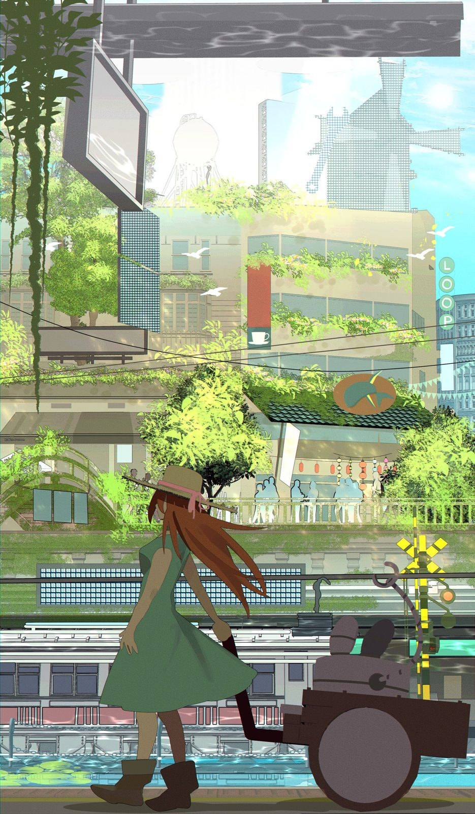

References / Illustration / 465
Solarpunk Technology and Nature together
A woman in a green dress pulls a small robot cart past a canal and a tram line, under buildings overgrown with vines and a pale, gridded wind tower.
- Source
- Story Seed Library: Solarpunk Technology and Nature together
- Creator
- Loop-chan
- Made
- 2024
- Style
- Solarpunk (agent-proposed, not yet reviewed by a person)
- Moods
- Sunlit, verdant, calm, hopeful
- Evidence
- Downloaded and inspected the Commons copy (original 2000 × 3421 px, viewed at 935 × 1600 px).
- Reviewed
- Rights
- Open license, stored. License: CC-BY-SA-4.0. Rights policy

Context
Story Seed Library, a solarpunk archive of openly licensed art and stories, lists the work as an illustration dated 25 March 2024, licensed CC BY-SA 4.0, and tags it Vertical, People, City, Transport, and Tram. Story Seed Library.
The Commons upload uses the same title and license. Commons file page.
Observed
- The format is tall and narrow. In the foreground, a red-haired woman in a straw hat and green dress pulls a wooden two-wheeled cart that carries a small robot with rabbit-like ears.
- Behind her, a pale tram runs on tracks beside a canal with lily pads, and a yellow and black level-crossing sign stands at right.
- Above, buildings with ribbon windows and balconies are covered in vines and bright green trees. Lanterns and bunting hang over a café terrace.
- On the skyline, a water tower and a windmill-like tower are drawn as pale, gridded silhouettes against a light blue sky. A vertical sign reads “LOOP”.
- The light is strong and hazy, washing the upper half toward white and cream. Flat shapes are combined with photo-like textures and screen patterns.
Why it belongs
The image shows the gentle, everyday side of solarpunk: technology as a helper (the cart robot, the tram) inside a garden city, not as spectacle.
The bleached, high-key light matches the style’s daylit ground and its high lightness. Its anime-influenced figure and collage textures are a common variant in online solarpunk art.
Borrow
Use a tall format with plants hanging from the top edge, so the viewer looks up through foliage.
Let strong light wash the background toward cream, and keep saturated green for the foreground leaves.
Measured
Machine-extracted by tools/image-traits.py on . Full measurement.
- Mean chroma
- 0.14
- Palette
- #fbfdfc 7%
- #605957 6%
- #c9dad4 5%
- #707374 5%
- #a2a785 4%
- #322421 4%
- #9cb2a9 4%
- #4f6a50 4%

